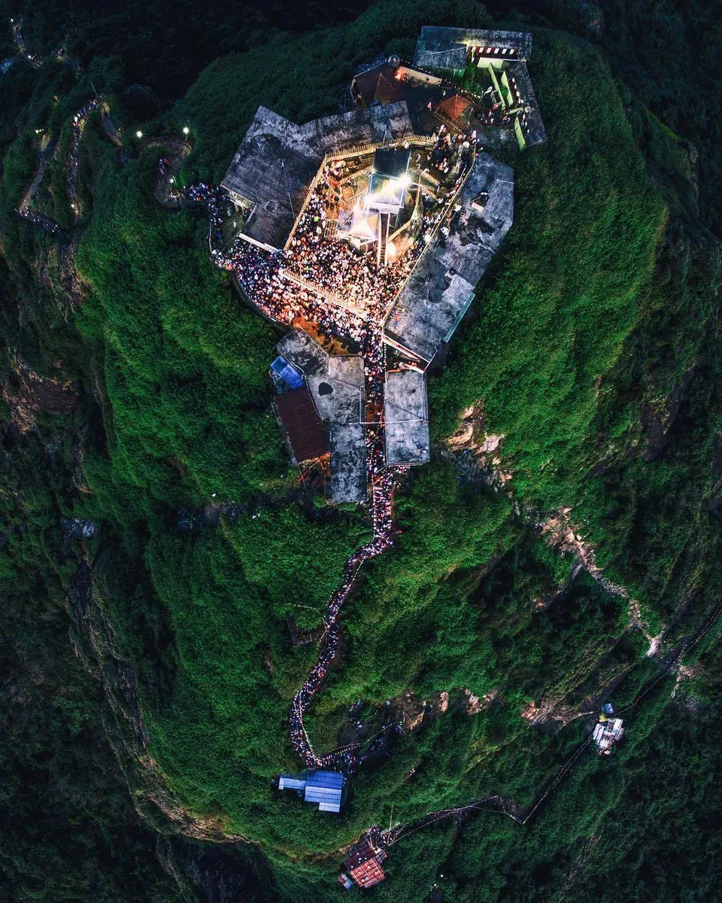
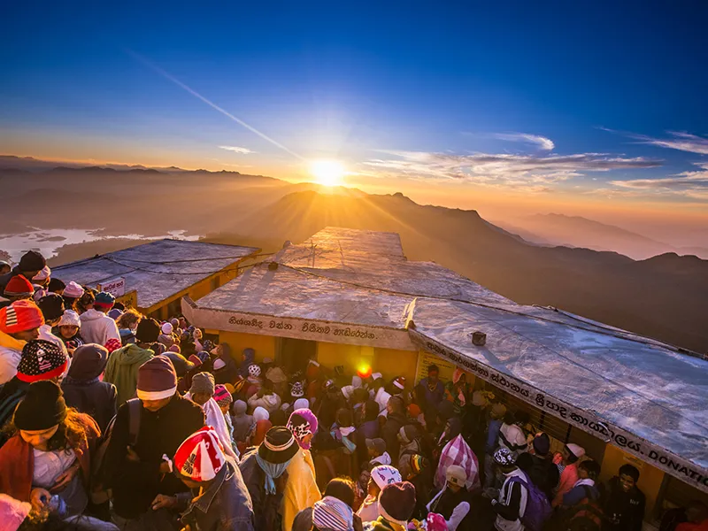
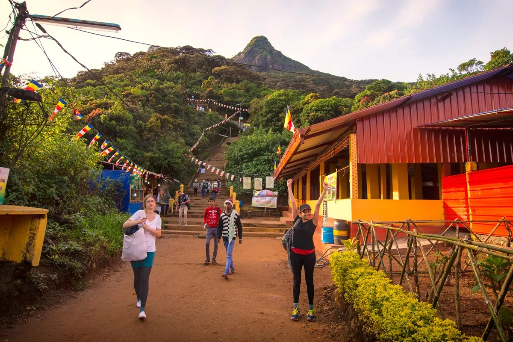
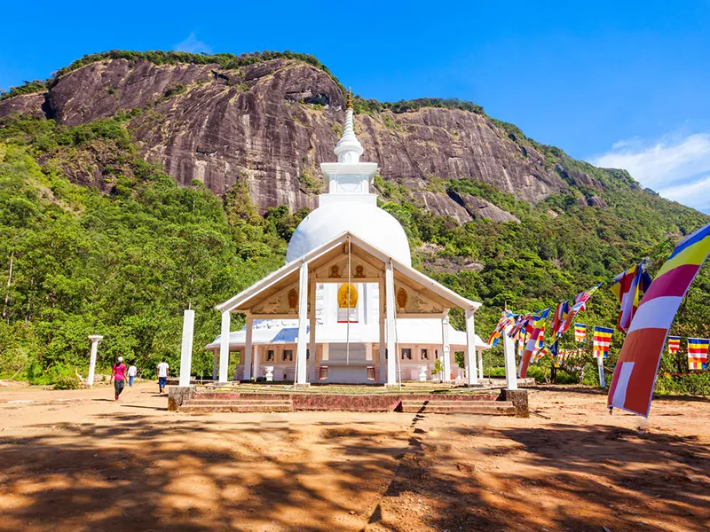

Adam’s Peak, mountain in southwestern Sri Lanka (Ceylon), 7,360 feet (2,243 m) high and 11 miles (18 km) northeast of Ratnapura; it is located in the Sri Lanka hill country. Its conical summit terminates in an oblong platform about 74 by 24 feet (22 by 7 m), on which there is a large hollow resembling the print of a human foot, 5 feet 4 inches by 2 feet 6 inches. The depression is venerated alike by Buddhists, Muslims, and Hindus, who regard it as the footprint of the Buddha, Adam, and Śiva, respectively. Many pilgrims of all faiths visit the peak every year. Heavy chains on the mountain’s southwestern face, said to have been placed there by Alexander the Great, mark the route to the summit.



